请访问原文链接：如何将 Windows 10、11 的恢复分区 (Recovery Partition) 移动到 C 盘之前，恢复 C 盘容量调整功能 查看最新版。原创作品，转载请保留出处。
作者主页：sysin.org
笔者这几天在制作 Windows Server 2022 OVF 的时候，发现 C 盘不能扩展容量了（虽然可以压缩，但是压缩的未分配空间无法合并到其他分区），在这虚拟化或者云环境中是非常糟糕的事情。本文提供了将 Windows 10（包含 Windows Server 2022）和 Windows 11 分区恢复到正常模式的方法，恢复正常调整 C 盘容量大小的功能。
Windows Server 2022 磁盘分区新变化
在 Windows Server 2022 中，再次调整了系统分区的容量，甚至将恢复分区移动了 C 盘（操作系统分区）之后，安装后是这样的：System Reserve 100M（如果使用 EFI 引导，则该 100M 为 EFI System Partition），C 盘后增加了一个 523M 的 Recovery partition（恢复分区），导致无法调节 C 盘容量。
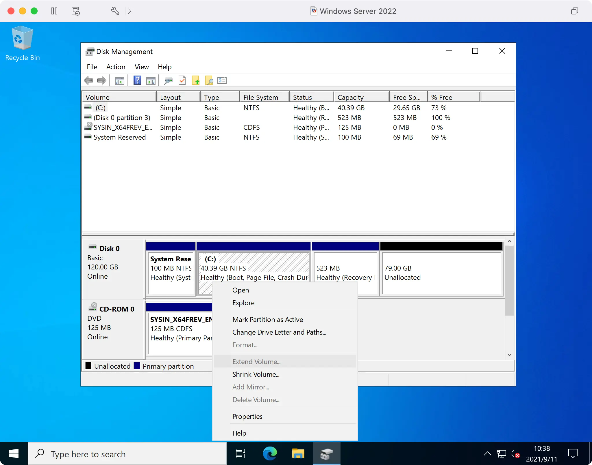
在 Windows 11 中同样存在此问题，恢复分区的大小变成了 644M（22H2 为 597M）。
不得不佩服 A3 的随性😄
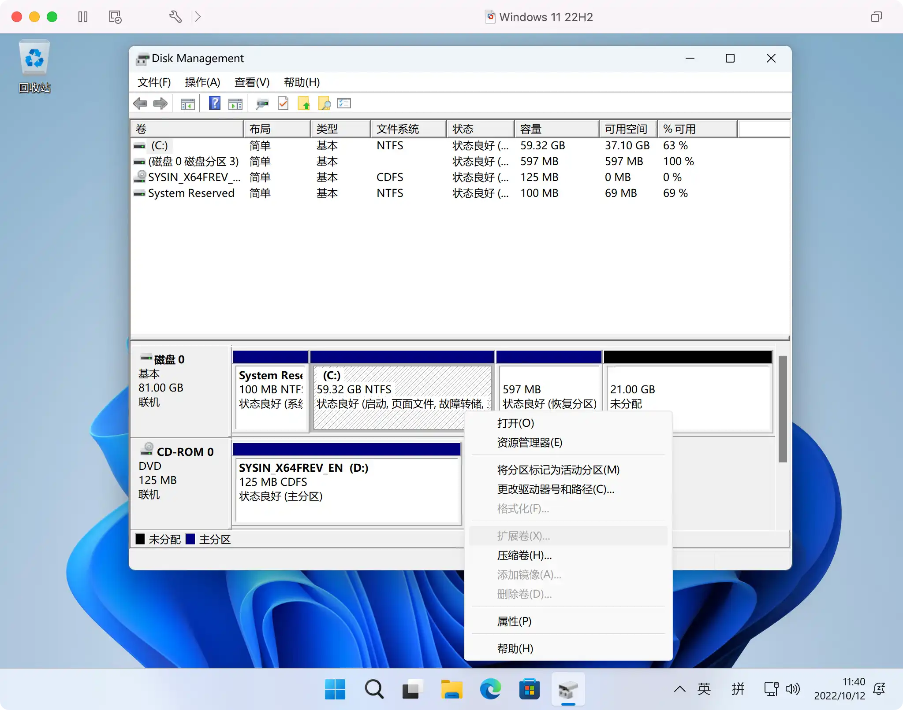
解读：关于 Windows 10 的恢复分区
说明：Windows Server 2016、2019 和 2022 皆为 Windows 10 Server，以下描述也适用。Windows 11 版本号仍然是 10.0 同样适用。
在 Windows 10 中，Windows 磁盘上可以有 Windows 恢复分区或计算机制造商 OEM 工厂恢复分区。
Windows 恢复分区允许您启动到 Windows 恢复环境 (WinRE) 以在出现问题时恢复您的计算机。
OEM 恢复分区允许您按特定键（通常为 HP 为 F9，为戴尔为 F12）将您的计算机恢复到出厂默认设置。此分区通常约为 12-18 GB，比 Windows 恢复分区大得多。
Windows 恢复环境 (Windows Recovery Environment，简称 WinRE) 是一种恢复环境，可以修复导致操作系统无法启动的常见问题 (sysin)。默认情况下，WinRE 预加载到 Windows 10 桌面版（家庭版、专业版、企业版和教育版）中。
WinRE 包括以下工具：
-
自动修复和其他故障排除工具。有关详细信息，请参阅 Windows RE 故障排除功能。
- 系统还原
- 启动修复
- 卸载更新
- 启动时的命令提示符
- 系统映像恢复
- UEFI 固件设置
- 返回到以前的 Windows 版本
-
按钮复位。此工具使您的用户能够快速修复自己的 PC，同时保留他们的数据和重要的自定义设置，而无需提前备份数据。有关详细信息，请参阅按钮重置概述。
- 刷新 Windows 10
- 重置 Windows 10
在 Windows 10 Version 1909（包含）及以前的版本，只有一个 System Reserved 分区在最前面，包含了 WinRE，通常在 500M - 550M（早期的 Windows 版本该分区更小一点），这样的益处是可以直接在 “磁盘管理” 工具中直观的增加或者减少 C 盘容量，而无需借助第三方工具。
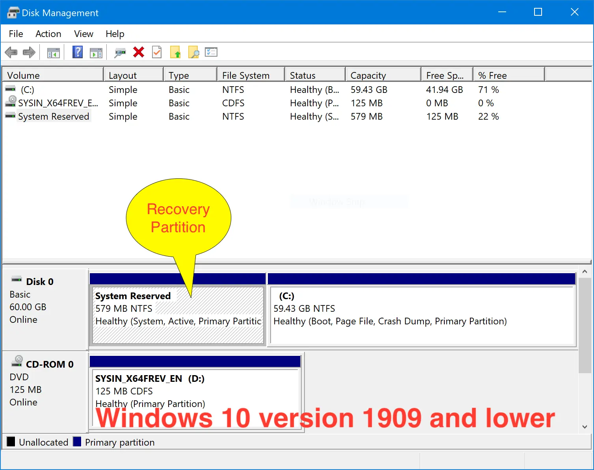
从 Windows 10 Version 2004（包含）开始（包括 Windows Server 2022，21H2），系统将在 C 盘后面自动创建一个 Recovery partition，该分区大小大约 520M - 530M 不等，巨硬 A3 不讲究，容量大小也很随意，Windows 11 这个容量变成了 644M。System Reserved 分区将变为 100 M 仍然在最前面，负责系统引导（如果使用 EFI 引导，则该 100M 为 EFI System Partition ）。这将导致再也无法直接调整 C 盘分区大小，即使借助第三方工具，操作步骤也是非常繁琐的。
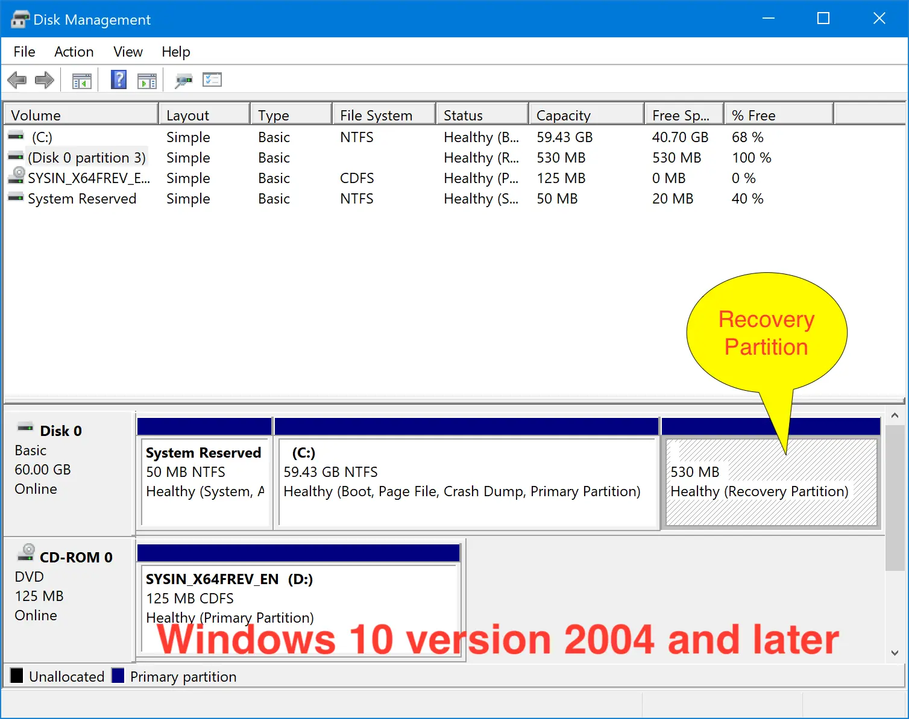
所以我们需要在系统安装完毕立刻调整该 Recovery partition 的位置，将其划分到 C 盘（操作系统分区）之前，然后重建 Recovery partition。更加简单粗暴的方法是直接将其删除，也不用过于担心 (sysin)，可以借助 USB 或者 ISO（虚机）引导 Windows PE 来替代 WinRE 的恢复功能。
本文的目标是在 System Reserved 分区之后，C 盘（操作系统分区）之前，创建一个 550M 的恢复分区，并删除原有的恢复分区，恢复 C 盘可以自由调整大小的该有功能。
准备：备份数据和所需软件
-
请先进行数据备份
如果这是你正在使用的电脑，请务必备份数据，虽然正确理解以下操作并没有风险，但是任何时候备份都是必要的。
-
专业分区工具
本例使用 MiniTool Partition Wizard，类似的软件有 Acronis Disk Director，Paragon Partition Manager 等，可以根据使用习惯选择，操作都是类似的。
-
系统自带工具
在执行以下命令之前，您必须知道它们的作用。请参阅 MS 的文档链接：diskpart, dism and reagentc
操作步骤
后面的步骤，我们分别用 MiniTool Partition Wizard 和（或）diskpart 命令进行操作，描述在前面的为建议操作方式。
以下操作同样适用于 Windows 10、11，只是因为 A3 的随性，恢复分区的容量各不相同，请根据实际容量修改。
1. 创建一个新的 550M 的恢复分区
在 System Reserved 分区之后，C 盘（操作系统分区）之前，创建一个 550M 的恢复分区。创建一个分区系统自带工具都可以完成，但是要在这个指定位置创建，似乎只能用第三方工具完成。
之所以选择创建 550M 这个数字，一方面是与原有分区有所区别，另外这个数字也没有那么随意😄
如图，我们可以看到默认三个分区，右键点击 C 分区，选择 “Move/Resize”
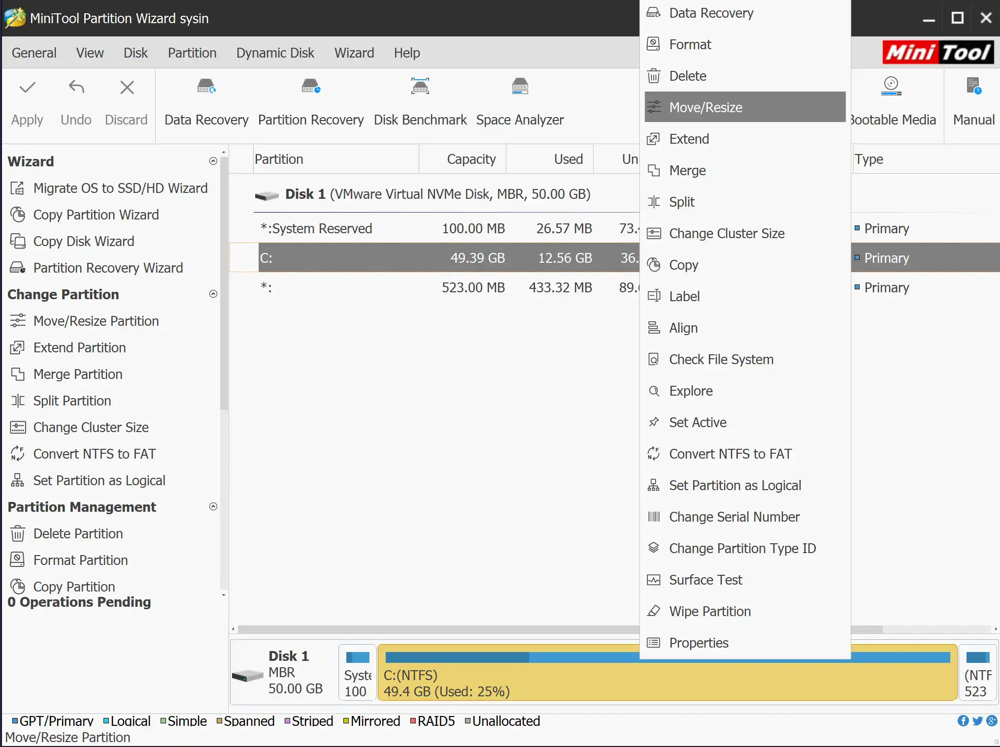
拖拽滚动条，然后填写数字 (sysin)，确保结果如下（Apply，重启后生效）：
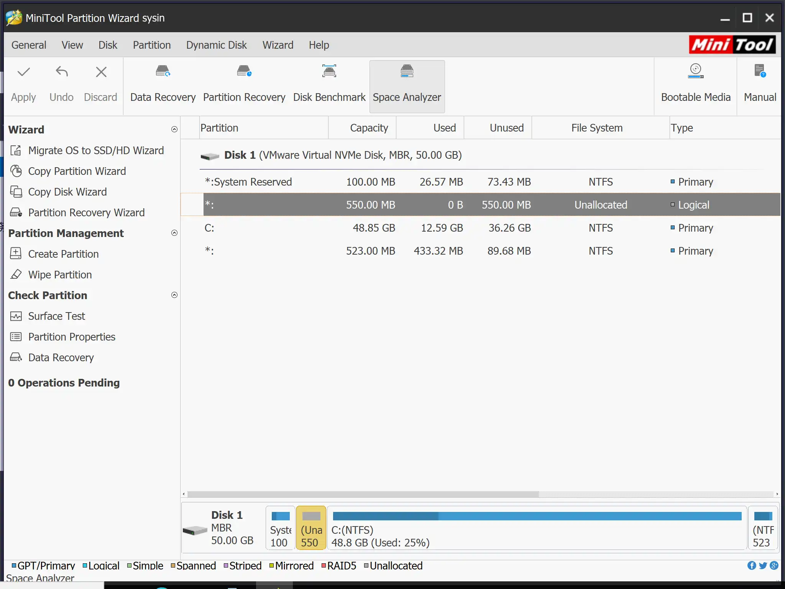
2. 复制（克隆）分区
现在我们需要将原有的恢复分区复制（克隆）到新的恢复分区
点击 “Copy Partition Wizard” 开始
选择原有恢复分区
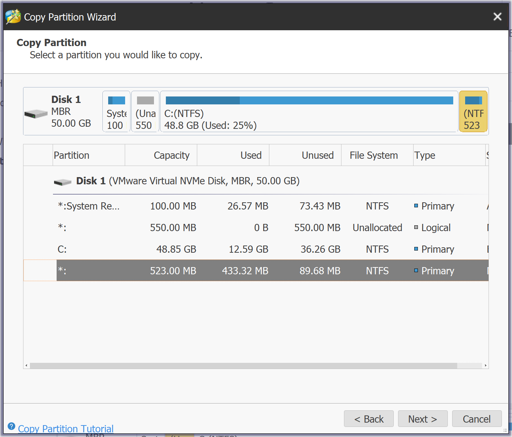
选择目标分区
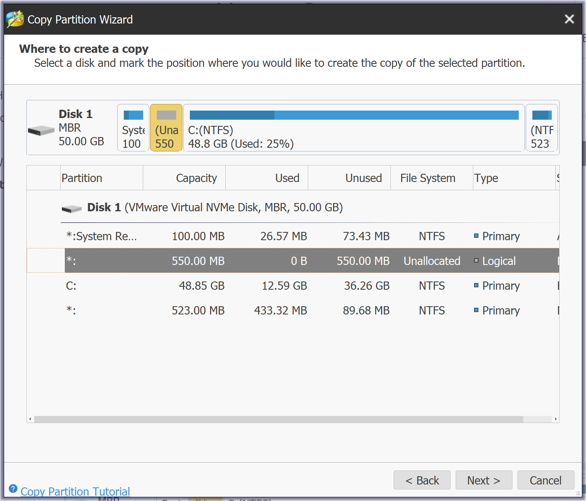
确认，注意将分区选择为 Primary（Create As: Primary）
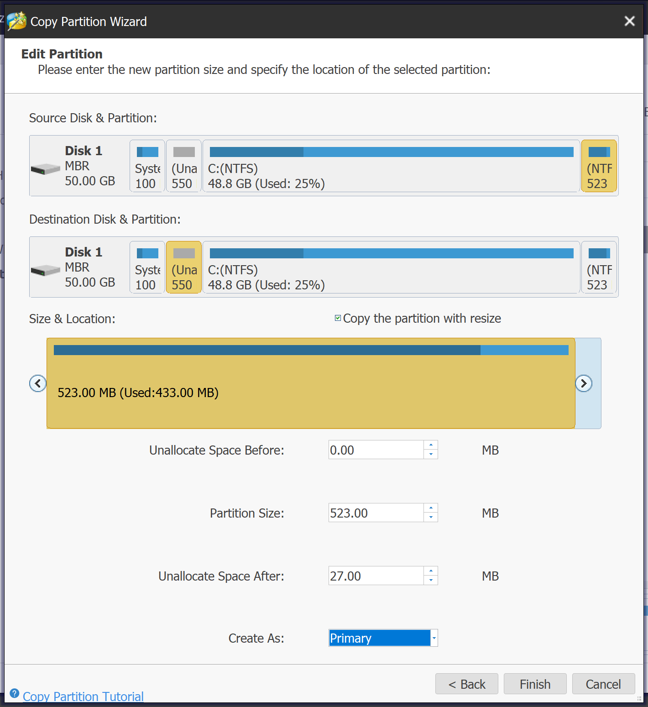
只有 523M，没有关系，我们 Extend Partition
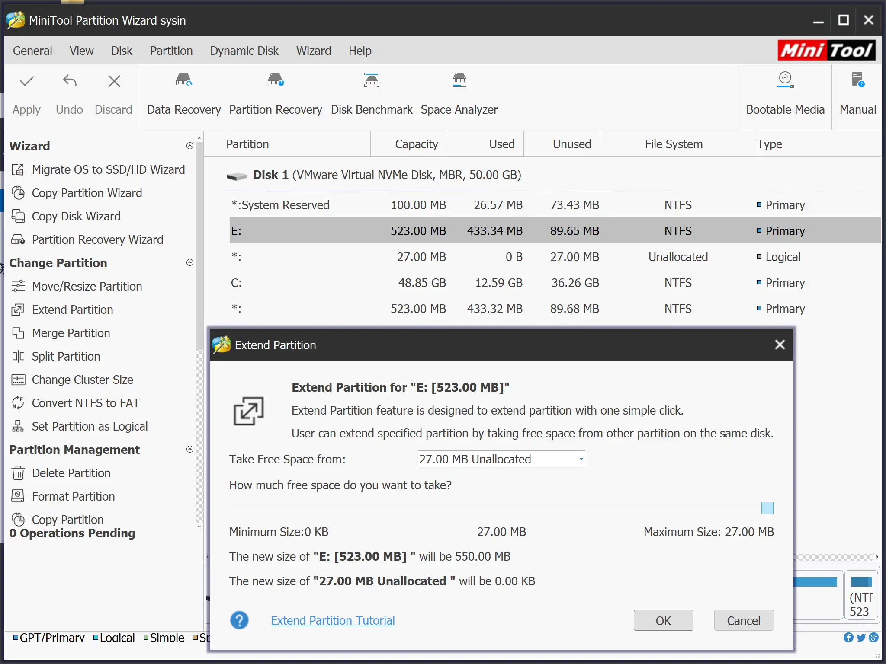
结果如下
本例中，自动给 550M 的新恢复分区指派了盘符 E，这里我们将其盘符更改为 N（new），请注意以下命令根据实际盘符修改。
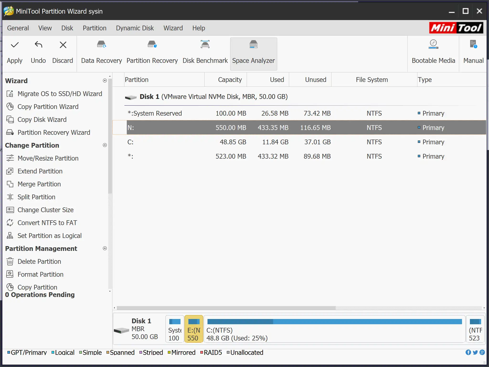
替代方法：使用 diskpart
官方参考文档：Capture and apply Windows, system, and recovery partitions
-
使用
diskpart给当前 recovery partition 分配一个盘符，这里定义为 O（original）:1
2
3
4
5DISKPART> list disk
DISKPART> select disk <the-number-of-disk> #默认一块磁盘这里为 0，即：select disk 0
DISKPART> list partition
DISKPART> select partition <the-number-of-current-recovery-partition> #这里一般是 3，即：select partition 3
DISKPART> assign letter=O -
从当前 recovery partition 中捕获镜像:
1
Dism /Capture-Image /ImageFile:C:\recovery-partition.wim /CaptureDir:O:\ /Name:"Recovery"
-
将捕获的镜像应用到新的 recovery partition（上述定义 550M 新恢复分区的盘符为 N）:
1
Dism /Apply-Image /ImageFile:C:\recovery-partition.wim /Index:1 /ApplyDir:N:\
3. 使用 REAgentC 命令配置 WinRE 镜像
以下三条命令分别是：
- 禁用 WinRE 镜像启动
- 指定 WinRE 镜像的位置（这里盘符是 N）
- 启用 WinRE 镜像启动
1 | reagentc /disable |
4. 隐藏新的恢复分区
使用 diskpart 命令，操作如下：
1 | diskpart |
分别针对 UEFI 和 BIOS 固件不同的操作方式来隐藏原有 recovery partition:
-
For UEFI:
1
2
3
4DISKPART> select volume N
DISKPART> set id="de94bba4-06d1-4d40-a16a-bfd50179d6ac"
DISKPART> gpt attributes=0x8000000000000001
DISKPART> remove -
For BIOS:
1
2
3DISKPART> select volume N
DISKPART> set id=27
DISKPART> remove
重启后 N 分区又自动出现？
使用 MiniTool Partition Wizard，右键点击 550M 的新的恢复分区，选择 “Change Letter” 修改值为 “None” 即可。
⚠️ 经测 Widows Server 2022 2022.06 至 09 更新版本中修改 “Change Letter” 为 “None” 会导致 WinRE 无法启动。
且不做任何修改使用默认的 WinRE 启动会蓝屏（虚拟机环境），即使上述不删除 “Change Letter”，启动后功能也简化了，仅仅是调出 “高级启动选项”，等价于在计算机重启时长按 F8 键，恢复分区已经没有存在意义，通过命令 reagentc /disable 禁用 WinRE 后直接删除恢复分区即可。
另外，2022 年 6 月开始恢复分区默认容量变为 578M。
5. 删除原有恢复分区
使用 MiniTool Partition Wizard，右键点击原有的恢复分区，选择 “Delete” 即可。
或者使用 diskpart 命令，操作如下：
1 | DISKPART> select volume O |
6. 重启到 WinRE 验证结果
设置 -> 更新和安全 -> 恢复，点击 “立即重新启动”，即可重启到 WinRE。
注意：如果是远程桌面连接，上述恢复页面显示空白，不可用。
如图所示，所有功能都可以正常工作。
本例是虚机下的示例，不同的硬件环境下功能可能有所差异。
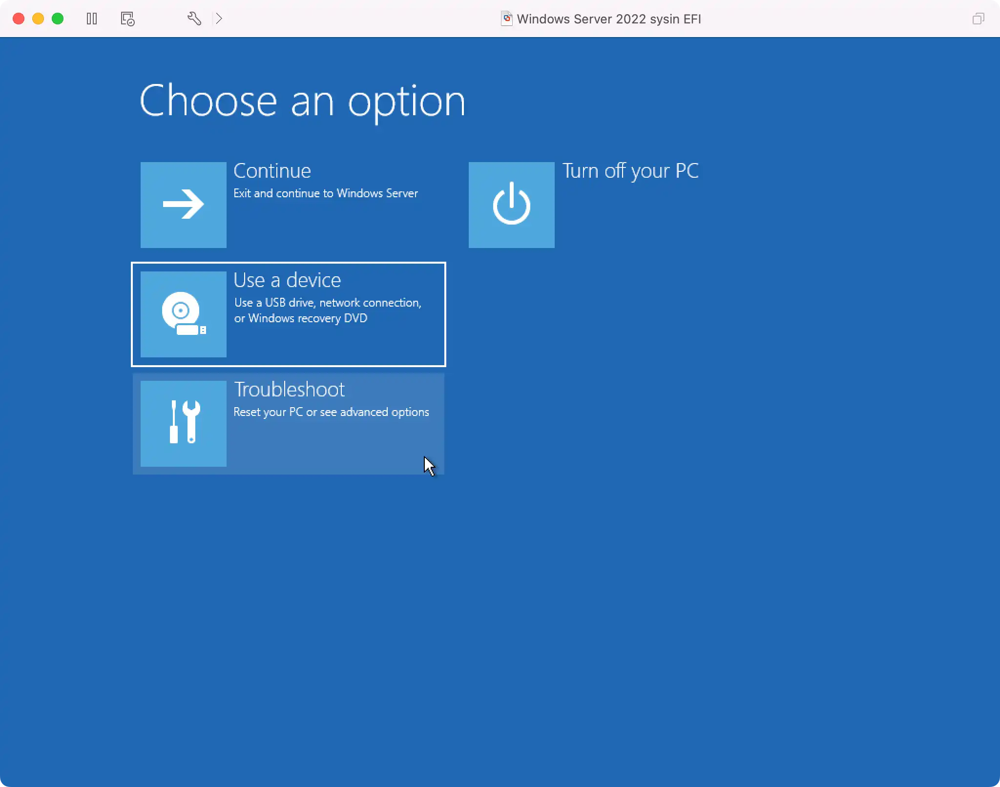
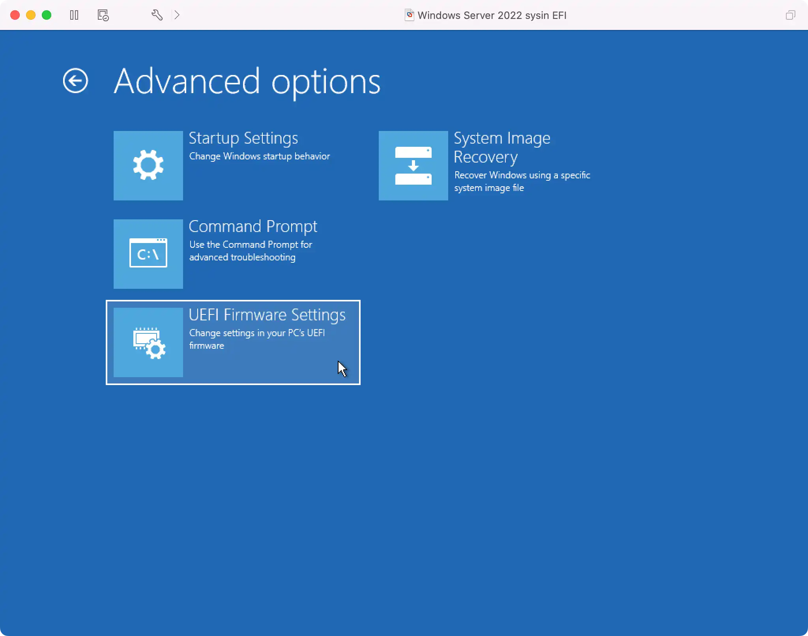
7. 终于可以正常调整磁盘大小
现在正常启动到系统，打开 “磁盘管理”，终于可以正常调整磁盘大小：“压缩卷” 和 “扩展卷”。
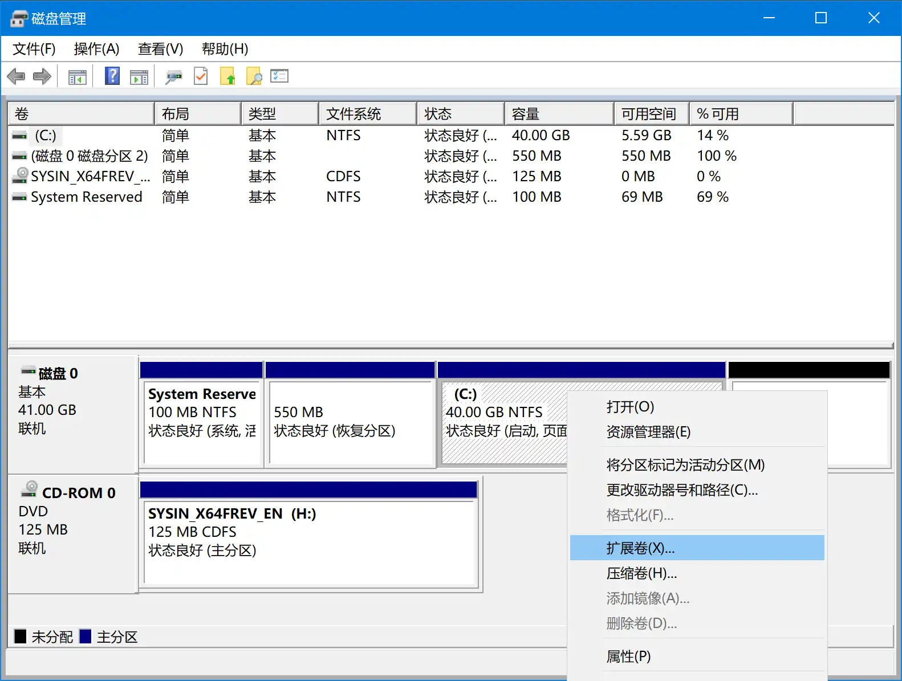
结语
巨硬 A3 太…不讲究，我们搞了这么多复杂的操作，才恢复了盖茨时代正常的磁盘分区的功能，实在无语。。。。。。
巨硬 A3 上任 8 年，一个控制面板没有修改好（设置和控制面板仍然混乱，麦德龙风格和经典风格分裂设计仍然没有解决），再难以企及盖茨时代巅峰，你还以为你是在用盖茨的 Windows 吗？今天的 Windows 全球市场份额已经从 95%+ 下降到 30% 左右，其他全部是 Unix-Like 系统的天下，说 A3 沦为小众不为过。。。。。。
更新：简单操作步骤（删除分区）
经测在 2022 年 6 月 至 9 月更新版本中，不做任何修改使用默认的 WinRE 启动会蓝屏（虚拟机环境），即使通过上述修改可以启动，启动后功能也简化了，仅仅是调出 “高级启动选项”，等价于在计算机重启时长按 F8 键，恢复分区已经没有存在意义。
-
禁用 WinRE（可选，下一步删除恢复分区后将自动禁用）
1
reagentc /disable
-
使用
diskpart删除 recovery partition:1
2
3
4
5
6diskpart
DISKPART> list disk
DISKPART> select disk <the-number-of-disk> #默认一块磁盘这里为 0，即：select disk 0
DISKPART> list partition
DISKPART> select partition <the-number-of-current-recovery-partition> #这里一般是 3，即：select partition 3
DISKPART> delete partition override
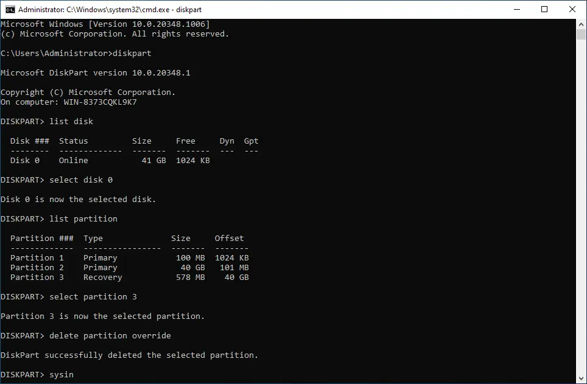
虚机模板下载：
更多：Windows 下载汇总

文章用于推荐和分享优秀的软件产品及其相关技术，所有软件默认提供官方原版（免费版或试用版），免费分享。对于部分产品笔者加入了自己的理解和分析，方便学习和研究使用。任何内容若侵犯了您的版权，请联系作者删除。如果您喜欢这篇文章或者觉得它对您有所帮助，或者发现有不当之处，欢迎您发表评论，也欢迎您分享这个网站，或者赞赏一下作者，谢谢！
 支付宝赞赏
支付宝赞赏
 微信赞赏
微信赞赏
赞赏一下